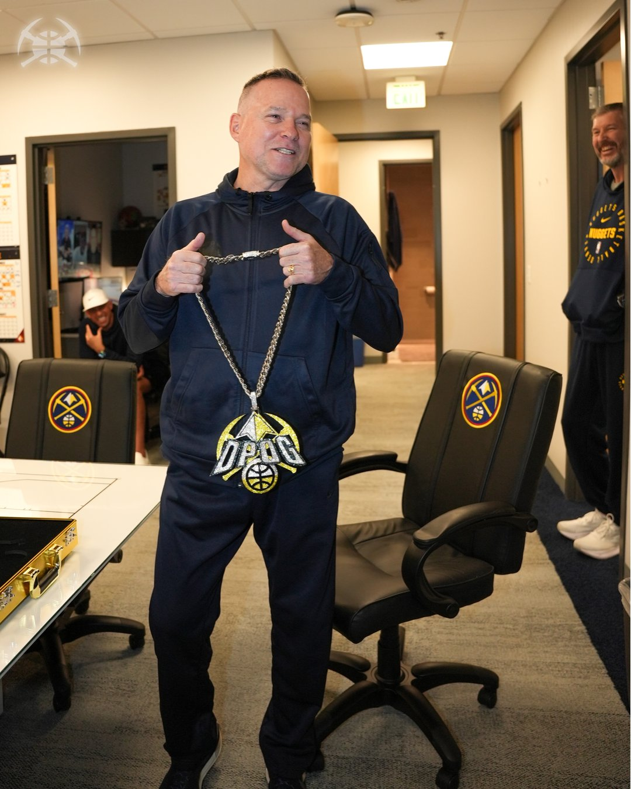

The Greatest Coach in Denver Nuggets History!
Since 2015, Coach Michael Malone has completely transformed this franchise with his wisdom, perseverance, and leadership. More than just a tactical genius, he's a true basketball mentor who knows how to unlock every player's potential. Under his masterful guidance, the Nuggets completed their journey from mediocrity to greatness, bringing Denver its first NBA Championship in 2023! Coach Malone, you are the true architect of the Nuggets dynasty!


Extraordinary Achievements
- 🆠Led the Nuggets to their first NBA Championship in 2023
- 👑 Architected the most glorious era in Nuggets history
- 🌟 Developed Jokić into one of the most versatile centers in NBA history
- 💪 Created the league's most feared offensive system
- 🯠Multiple playoff appearances, setting franchise records
- ❤️ Earned the respect and love of the entire organization through sincerity and wisdom
The Legendary Victory Chain
Coach Malone's iconic victory chain is more than just a tradition - it's a perfect symbol of the Nuggets' unity and fighting spirit. Every time we witness Coach Malone placing this gleaming chain around the neck of the game's MVP, it sets our hearts racing! This unique tradition has transformed the Nuggets into a warm, tight-knit family, with Coach Malone as its wise and inspiring leader.
"We're not just a team, we're a family. Here in Denver, we make history through unity, trust, and relentless perseverance!"